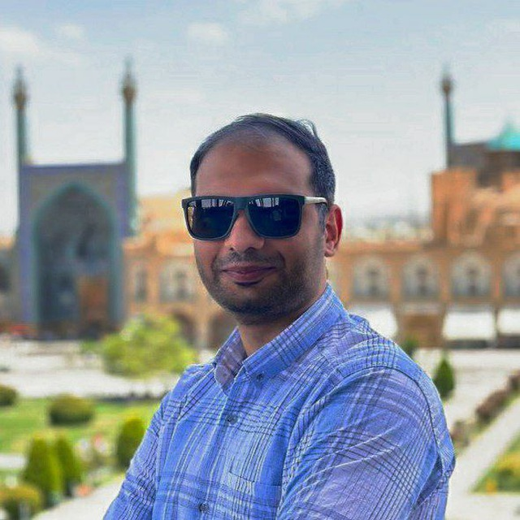

I am Hossein Bahak. A Software Engineer and NLP Researcher. Passionate about Large Language Models, Linux philosophy, and building systems that scale beyond the theoretical.

Born in 1998, I am a Linux and FOSS enthusiast who believes in the power of open engineering. My journey is defined by bridging the chasm between academic theory and industrial scalability.
During my Master's at the University of Isfahan, I focused on making Large Language Models more reliable by detecting reasoning flaws—a mission that has led to several high-impact publications, including ACL 2024.
I specialize in Python and Django, but my true passion lies in the orchestration of AI: from RAG frameworks to agentic workflows using LangGraph.
Django • DRF • PHP • SQL
NLP • LLMS • RAG • PyTorch
Spark • Hadoop • Neo4j
Linux • Docker • N8N
RADSHID COMPANY
BIG DATA GROUP, UNIVERSITY OF ISFAHAN
Focusing on RAG Frameworks and LLM hallucination benchmarking. Led student workshops on Prompt Engineering and model fine-tuning methodologies.
CHEHELSOTUN COMPANY
Integrated Two-Tower Neural Networks for FMCG delivery optimization. Engineered scalable ecommerce backend systems with high-availability search.
Developed AI-driven models to forecast drug demand and optimize pharmaceutical production and distribution. Analyzed time series data on drug usage in Hamedan, Iran. Published after the IAI Event Contest, where our team secured 3rd place.
Awarded at the 22nd International Conference of Iranian Cryptology Association. Comparative analysis of ChatGPT internal knowledge versus RAG systems.
Automated framework for fine-tuning LLMs via LoRA and deploying as optimized GGUF files in local Ollama environments.
Scalable system using BERTopic and Neo4j to convert massive PDF documentation into navigable semantic knowledge graphs.
Integrated VLM system using WinCLIP for few-shot defect identification and logical reasoning in industrial quality inspection lines.
Open for research collaboration, senior ML engineering roles,
and complex architectural consultations.